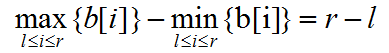
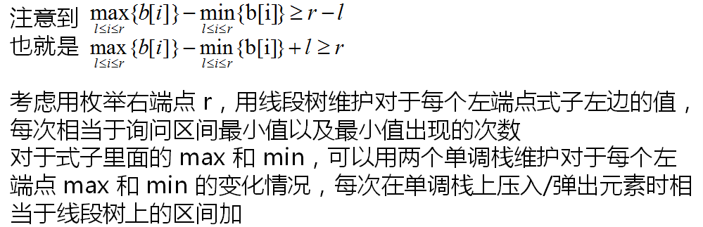

原文连接:https://www.cnblogs.com/I-Love-You-520/p/11624936.html
T1 方阵
题目
【题目描述】
小澳最近迷上了考古，他发现秦始皇的兵马俑布局十分有特点，热爱钻研的小澳打算在电脑上还原这个伟大的布局。
他努力钻研，发现秦始皇布置兵马俑是有一定规律的。兵马俑阵总共有n行m列，秦始皇在布置的时候每次会指定一行或一列，然后指定一个兵种，使得这一行或者这一列上全部放上这一个兵种。如果这一行上以前放过其它的兵种，那么他会拔掉以前的兵种改成现在他命令的兵种。
小澳从秦朝的文献中找到了布置这个方阵的操作顺序，他希望你能告诉他布局完成后整个兵马俑阵是什么样子的。
【输入格式】
输入文件共q+1行。
输入文件第1行包括三个正整数n,m,q，分别表示兵马俑阵的行数和列数以及秦始皇总的操作数。
接下来q行，每行三个正整数x,y,z，x表示操作种类，若x=1表示给第y行(y≤n)全部放上z这个兵种，若x=2，则表示给第y列(y≤m)全部放上z这个兵种，数据保证z≤231-1。
【输出格式】
n行，每行m个整数，分别用空格隔开。表示最后方阵上每个位置放的兵种，如果某个位置没有被操作过输出0。
【输入样例】
3 3 3
1 1 3
2 2 1
1 2 2【输出样例】
3 1 3
2 2 2
0 1 0【数据规模】
对于前20%的数据，n×m≤25。
对于前30%的数据，q≤2000。
对于100%的数据，n,m≤1000，n×m≤105，q≤106。
解析
惊！原题长乐培训Day4t1！
送分题，直接模拟即可，不过得从后往前来，不然会超时。
Code


#include <algorithm> #include <iostream> #include <cstring> #include <string> #include <cstdio> #include <cmath> using namespace std; int read() { int num=0,w=1; char ch=getchar(); while(ch<'0'||ch>'9') { if(ch=='-') w=-1; ch=getchar(); } while(ch>='0'&&ch<='9') { num=(num<<1)+(num<<3)+ch-'0'; ch=getchar(); } return num*w; } struct rec{ int p,x,y; }s[1000010]; int n,m,q,map[1010][1010]; int main() { //freopen("matrix.in","r",stdin); //freopen("matrix.out","w",stdout); int t; n=read(),m=read(),q=read(); for(int i=1;i<=q;i++) s[i].p=read(),s[i].x=read(),s[i].y=read(); for(int i=q;i>=1;i--) { if(s[i].p==1) { for(int j=1;j<=m;j++) if(!map[s[i].x][j]) map[s[i].x][j]=s[i].y; } else { for(int j=1;j<=n;j++) if(!map[j][s[i].x]) map[j][s[i].x]=s[i].y; } } for(int i=1;i<=n;i++) { for(int j=1;j<=m;j++) cout<<map[i][j]<<" "; cout<<endl; } return 0; }
T2 排名
题目
【题目描述】
小明班里一共N名同学，小明这次考试考的不错，他知道他考了多少分，以及班级里的同学一共考了多少分，小明还知道这次考试满分为100，问小明最高可以排第几，最低可以排第几。
（相同分数算并列的排名，比如总共4个人7,6,6,5，那么他们的排名分别就是1,2,2,4）
【输入格式】
第一行包括三个整数N,A,S，分别表示班里同学的人数，小明的分数，以及班里同学的总分。
【输出格式】
包括两个用空格隔开的正整数，分别表示小明在最优情况下的排名，以及在最坏情况下的排名。
【输入样例】
5 90 450【输出样例】
1 4【数据规模】
对于40%的数据，1≤N≤10；
对于100%的数据，1≤N≤105，0≤A≤100，0≤S≤100N。
解析
贪心：
计算最高排名时，先将所有人分数定为a，如果总分不够或总分刚好够，则第1；如果够，则逐渐增加满分人数，直到总分不够或刚好够，则排名为满分人数+1。
计算最低排名时，先将所有人分数定为a+1，如果总分不够，则排名为当前分数为a+1的总人数+1；如果够，则排名为n。
注意a=100分的情况(此时a+1=101，超出满分)，特判一下直接输出即可。
Code
#include <algorithm> #include <iostream> #include <cstring> #include <string> #include <cstdio> #include <cmath> using namespace std; int read() { int num=0,w=1; char ch=getchar(); while(ch<'0'||ch>'9') { if(ch=='-') w=-1; ch=getchar(); } while(ch>='0'&&ch<='9') { num=(num<<1)+(num<<3)+ch-'0'; ch=getchar(); } return num*w; } int n,a,s,num; int high(int ans) { for(int i=2;i<=n;i++) { if(ans>=a) ans-=a; else return 1; } if(ans==0) return 1; for(int i=2;i<=n;i++) { if(ans>=100-a) ans-=100-a; else return i; if(ans==0) return i; } return n; } int low(int ans) { for(int i=1;i<n;i++) { if(ans>=a+1) ans-=a+1; else return i; } return n; } int main() { //freopen("rank.in","r",stdin); //freopen("rank.out","w",stdout); n=read(),a=read(),s=read(),s-=a; if(a==100) cout<<"1 1"; else cout<<high(s)<<" "<<low(s); return 0; }
T3 最长不下降子序列
题目
【题目描述】
给你一个正整数N，请你统计出所有的长度恰好为n的01序列的最长不下降子序列之和。
【输入格式】
第一行包括一个正整数N。
【输出格式】
一行包括一个整数表示所统计的答案，由于答案可能会很大，所以我们把答案对109+7取模。
【输入样例】
3 【输出样例】
20【数据规模】
对于30%的数据，n≤20；
对于100%的数据，n≤200。
解析
DP题，令f[i][j][k]表示长度为i，以0结尾的最长不下降子序列长度为j,以1结尾的最长不下降子序列长度为k的方案数，初值均为0，边界f[1][1][0]=f[1][0][1]=1。
状态转移方程：考虑给第i+1位上填0或1。
- 若第i+1位上填0，则f[i+1][j+1][k]+=f[i][j][k]，第i+1位为0，只能由第i位为0时得到。
- 若第i+1位上填1，则f[i+1][j][max(j,k)+1]+=f[i][j][k]，第i+1位为1，无论第i位是0还是1，其以1结尾的最长不下降子序列长度必然增加，因为1是最大的，故k取max(j,k)+1。
最终答案为max(j,k)*f[n][j][k]之和。
Code
#include <algorithm> #include <iostream> #include <cstring> #include <string> #include <cstdio> #include <cmath> using namespace std; const int mod=1000000007; int n; long long ans,f[210][210][210];//f[i][j][k]表示长度为i,以0结尾最长不降子序列长度为j,以1结尾为k int main() { //freopen("lis.in","r",stdin); //freopen("lis.out","w",stdout); f[1][1][0]=1,f[1][0][1]=1; cin>>n; for(int i=1;i<=n;i++) for(int j=0;j<=i;j++) for(int k=0;k<=i;k++) { f[i+1][j+1][k]=(f[i+1][j+1][k]+f[i][j][k])%mod; f[i+1][j][max(j,k)+1]=(f[i+1][j][max(j,k)+1]+f[i][j][k])%mod; } for(int j=0;j<=n;j++) for(int k=0;k<=n;k++) ans=(ans+(long long)max(j,k)*f[n][j][k])%mod; cout<<ans; return 0; }
T4 奇袭
题目
【题目描述】
给出一张N×N的网格图，一共有N支军队驻扎在一些网格中（不会有两只军队驻扎在一起）。
每有一个k×k(1≤k≤N)的子网格图包含恰好k支军队，袭击的难度就会增加1点，请你计算出袭击的难度。
【输入格式】
第一行，一个正整数N，表示网格图的大小以及军队数量。
接下来N行，每行两个整数Xi,Yi，表示第i支军队的坐标。
保证每一行和每一列都恰有一只军队，即每一个Xi和每一个Yi都是不一样的。
【输出格式】
一行，一个整数表示袭击的难度。
【输入样例】
5
1 1
3 2
2 4
5 5
4 3【输出样例】
10【数据规模】
对于前10%的数据，N≤100；
对于前40%的数据，N≤5000；
对于100%的数据，N≤50000。
解析
以下来源于出题人的题解。
对于每一个坐标(x,y)，记b[x]=y，故所求为序列b满足下列条件的区间[l,r]的数量：


Code
#include <algorithm> #include <iostream> #include <cstring> #include <string> #include <cstdio> #include <cmath> using namespace std; int read() { int num=0,w=1; char ch=getchar(); while(ch<'0'||ch>'9') { if(ch=='-') w=-1; ch=getchar(); } while(ch>='0'&&ch<='9') { num=(num<<1)+(num<<3)+ch-'0'; ch=getchar(); } return num*w; } const int N=50100,M=100100; int n,a[N],maxl[N],maxr[N],minl[N],minr[N],bz[M*2]; long long work(int l,int r) { if(l==r) return 1; int mid=(l+r)>>1; maxl[mid]=minl[mid]=a[mid],maxr[mid+1]=minr[mid+1]=a[mid+1]; for(int i=mid-1;i>=l;i--) maxl[i]=max(maxl[i+1],a[i]),minl[i]=min(minl[i+1],a[i]); for(int i=mid+2;i<=r;i++) maxr[i]=max(maxr[i-1],a[i]),minr[i]=min(minr[i-1],a[i]); long long t=0; for(int i=mid;i>=l;i--) { int p=i+maxl[i]-minl[i]; if(p<=mid||p>r) continue; if(minr[p]>minl[i]&&maxr[p]<maxl[i]) t++; } for(int i=mid+1;i<=r;i++) { int p=i-maxr[i]+minr[i]; if(p>mid||p<l) continue; if(minl[p]>minr[i]&&maxl[p]<maxr[i]) t++; } int z1=mid+1,z2=mid; for(int i=mid;i>=l;i--) { while(minr[z2+1]>minl[i]&&z2<r) z2++,bz[maxr[z2]-z2+M]++; while(maxl[i]>maxr[z1]) { bz[maxr[z1]-z1+M]--,z1++; if(z1>r) break; } if(z1>r) break; if(z1<=z2) t+=bz[minl[i]-i+M]; } for(int i=mid;i>=l;i--) bz[minl[i]-i+M]=0; for(int i=mid+1;i<=r;i++) bz[maxr[i]-i+M]=0; z1=mid,z2=mid+1; for(int i=mid+1;i<=r;i++) { while(minl[z2-1]>minr[i]&&z2>l) z2--,bz[maxl[z2]+z2+M]++; while(maxr[i]>maxl[z1]) { bz[maxl[z1]+z1+M]--,z1--; if(z1<l) break; } if(z1<l) break; if(z2<=z1) t+=bz[minr[i]+i+M]; } for(int i=mid+1;i<=r;i++) bz[minr[i]+i+M]=0; for(int i=mid;i>=l;i--) bz[maxl[i]+i+M]=0; return t+work(l,mid)+work(mid+1,r); } int main() { n=read(); for(int i=1;i<=n;i++) { int x=read(),y=read(); a[x]=y; } cout<<work(1,n); return 0; }